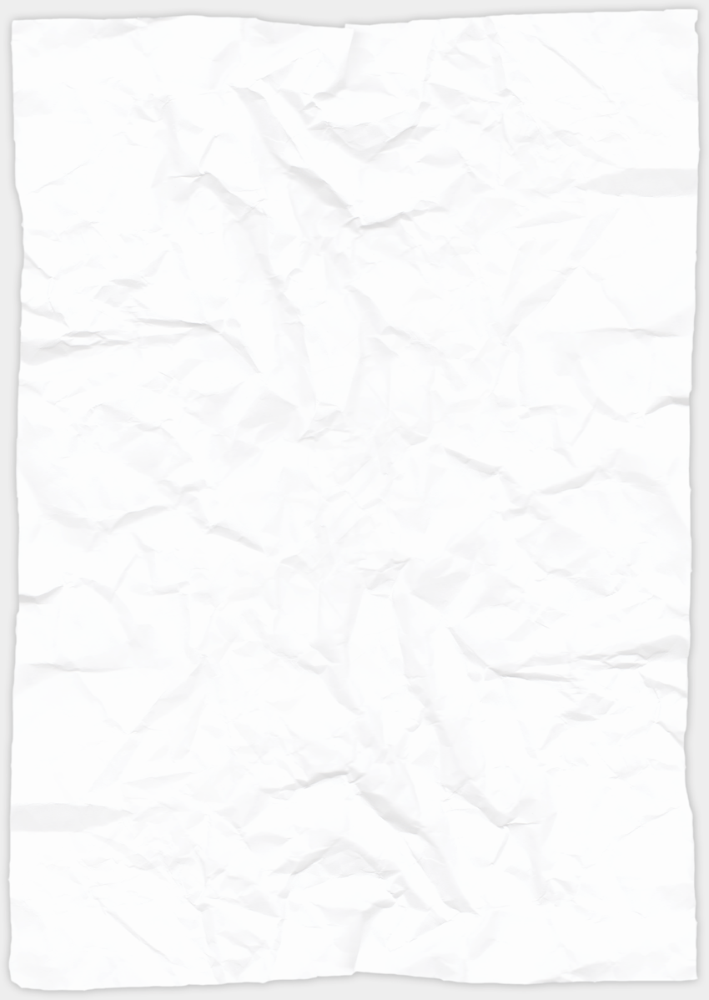

|

Choose Your Own AdventureOnline Safety Game Script by: Kat Sederquist
COMPUTER DESKTOP MAIN Wallpaper is of something Silly like a LOLcat of some sort. There is a "Start Menu" (Icon should be a spoofed windows logo) Silly icons in the system tray and a few random spoof icons on the desktop "Internet" menu is a backwards E "Lemonware" icon (limewire) "Email" Icon (something generic) "IM" icon (something generic) USER IS PROMPTED FOR ACTION: What do you want to do? CHECK EMAIL (MAIN) IM (MAIN) INTERNET (MAIN) LEMONWARE (MAIN) CHECK EMAIL MAIN Fake Email Program with 3 unread messages
CHECK EMAIL A: a close up of the email in the inbox. USER IS PROMPTED: what do you want to do with this email?
If 1: (Sound) Congratulations! This email is obviously SPAM, or junk email. Next time, mark it as SPAM or junk so it goes right to the SPAM or junk mail folder. GO TO CHECK EMAIL B If 2: (Sound) Congratulations! This email is obviously SPAM, or junk email. Next time an email comes in like this one, it will get moved to the SPAM or junk mail folder. GO TO CHECK EMAIL B If 3: USER IS TAKEN TO EMAIL SPAM: Eback to the inbox screen with TONS of spam now in the unread messages. An explanation of the "wrong" choice comes up: Yikes! You should never reply to emails like this, called SPAM. Your email address could be added to lots of mailing lists and your inbox can fill up with more and more junk! Just delete them, or better yet, mark it as junk mail, or SPAM with your email program. GO TO CHECK EMAIL
A CHECK EMAIL B: a close up of the email in the inbox. USER IS PROMPTED: what do you want to do with this email?
If 1: (Sound) Congratulations! This email might have a virus attached! If you don't know that Katie actually meant to send you an attachment you should not open it. Maybe send her an email and ask if she meant to send something to you. She can always re-send it if it's the real deal. GO TO CHECK EMAIL C If 2: USER IS TAKEN TO VIRUS ATTACK 1! Some sickly looking face takes over
the screen or somesuch thing. File transfer boxes pop up (like download
boxes) all over the place! (Error sounds) Then the computer
crashes, with a BSOD that Miley Cyrus has cased a fatal exception in
prtyinUSA.exe.dll.halp.onnoes. GO TO CHECK EMAIL
B CHECK EMAIL C: a close up of the email in the inbox. USER IS PROMPTED: what do you want to do with this email?
If 1: (Sound) Congratulations! No legitimate websites will ever email you asking for account information. This email was a "phishing" attempt by a hacker! They try to get peoples account information to send SPAM or worse. GO TO
DESKTOP MAIN If 2: USER IS TAKEN TO HACK ATTACK! back to the inbox screen with more messages now in the unread messages, all from SMILEYFACESPACE. (New Mail Sound) They have subjects like NEW MESSAGE OR NEW COMMENT over and over. There is some spam in there too and finally a SMILEYFACESPACE message that says ACCOUNT DISABLED FOR HACKING. An explanation of the "wrong" choice comes up: Oh NO! you should never reply to emails asking for your personal information. This is called "Phishing". Hackers can use your passwords to send SPAM and other junk from your account....or worse! GO TO CHECK EMAIL B IM A: IM Program opens, and Katie IM's you. Katie: Hey J Katie: Whats up? Katie: Click this! (bad link) Katie: is this you in this pic?
(file transfer request) USER IS PROMPTED: what do you want to do?
If 1: (Sound) Congratulations! This link might take you to a bad website that could install malware on your computer. Maybe reply back to her IM and ask her what kind of link she sent you, or if she event meant to send it to you at all. She might have a virus and not even know it! GO TO IM B If 2: USER IS TAKEN TO POPUP ATTACK! A zillon pop ups all over the place! (Pop sounds) An explanation of the "wrong" choice comes up: Uh Oh!! That link brought you to an infected website and now your computer is acting awfully funny. GO TO IM A If 3: USER IS TAKEN TO VIRUS ATTACK 2! (Error sounds) a huge message takes over the screen: YOU ARE INFECTED! An explanation of the "wrong" choice comes up: Just GREAT!! That file transfer installed some malware. How are you going to explain this one? You will be grounded for at least a week now. GO TO IM A IM B: IM Program opens, and
you have a chat request from Joe1294. USER IS PROMPTED: what do you want to do?
If 1: (Sound) Congratulations! If you don't know Joe1294 you should not chat with him. He may not be who he says he is! GO TO DESKTOP MAIN If 2: Joe1294 starts IMing a lot of questions. ASL, whats your real name, where do you live, wanna video chat, ect. An explanation of the "wrong" choice comes up: Creepy! Sounds like Joe1294 is not a very nice guy at all. GO TO
IM B P2P MAIN: program starts to resume a previous download…when it hits 100% VIRUS ATTACK 3 (combo of 1 and 2) (Error
sounds) a huge message takes over the screen: YOU ARE INFECTED!
Some sickly looking face takes over the screen or somesuch thing. File
transfer boxes pop up (like download boxes) all over the place!
Then the computer crashes, with a BSOD that Miley Cyrus has cased a
fatal exception in prtyinUSA.exe.dll.halp.onnoes. GO TO DESKTOP MAIN INTERNET MAIN: social networking spoof with account information dropdown menus. GO TO INTERNET SCREENNAME INTERNET SCREENNAME: close up
of screenname drop down box. USER IS PROMPTED: WHAT IS A GOOD SCREENNAME?
If 1 or 2: (Sound) Congratulations! These are OK screen names. They don't have your birthday or name in it. and they are not suggestive. Good Job. GO TO INTERNET BIRTHDAY If 3 or 4: (Sound) Are you sure? Is 1993 your birth year? ~xXcutieXx~ might attract unwanted attention. GO TO INTERNET SCREENNAME INTERNET
BIRTHDAY: close up of birthday drop down box. USER IS PROMPTED: DO YOU WANT TO DISPLAY YOUR BIRTHDAY?
If 1: That is personal information you should not display on the internet. You should always leave your birth year out, and check with your parents if you are allowed to put your month and date on the internet. GO TO INTERNET BIRTHDAY If 2: Yup! That's personal information you would want to leave off your profile. GO TO INTERNET
LOCATION INTERNET
LOCATION: close up of location drop down box. USER IS PROMPTED: DO YOU WANT TO DISPLAY YOUR TOWN/CITY?
If 1: That is personal information you should not display on the Internet. You should always leave your location off your profile. GO TO INTERNET
BIRTHDAY If 2: Yup! That's personal information you would want to leave off your profile. GO TO INTERNET
PIC INTERNET
PIC: close up of pic drop down box. USER IS PROMPTED: WHAT IS A GOOD PROFILE PIC?
If 1 or 2: Great choice! You should always check with your parents if you aloowed to post photos on your profile. GO TO INTERNET PRIVACY If 2: The School name is visible right on that shirt! Oops! That might give away your location. You should always check with your parents so they can take a closer look at photos you want to put on your profile. GO TO INTERNET PIC INTERNET
PRIVACY: close up of Account Priviate? drop down box. USER IS PROMPTED: DO YOU WANT TO MAKE YOUR ACCOUNT PRIVIATE?
If 1: Awesome. Now only your friends can see your stuff, and not random strangers you don't know.. GO TO INTERNET FRIEND If 2: This means ANYONE on the internet can look through your profile….that's not good! GO TO INTERNET PRIVACY INTERNET
FRIEND: Popup that Jamesthegreat1975 wants to be your friend.
Jamesthegreat1975 is mutual friends with 45 of your friends. USER IS PROMPTED: DO YOU WANT TO ACCEPTY THIS FRIEND REQUEST?
If 1: Just because all your friends
"know" this person, doesn't mean you accept the request.
Don't accept friend requests from people you don't know. Maybe
ask your friends if they really know this guy. If 2: Right! Just because all your friends added this person doesn't mean you should too. Don't accept friend requests from people you don't know. GO TO INTERNET POST INTERNET
POST: Closeup of a post. "OMG U totally failed that test.
Ur dumb" What a lsr. USER IS PROMPTED: WHAT DO YOU WANT TO DO?
If 1: Don't encourage them!
Posting mean stuff about people is called "cyberbullying" and replying
back is just going to make it worse. You should tell someone about it
in case it turns into a really bad situation. If 2: Ignoring is good, but if this situation gets worse you may need that information. GO TO
INTERNET POST If 3: Exactly! Your parents or guardians will know what to do from here. GO TO
COMPUTER DESKTOP MAIN END COMPUTER DESKTOP MAIN END Main desktop again, with fanfare and such that they have completed the mission. Download Script.docx |